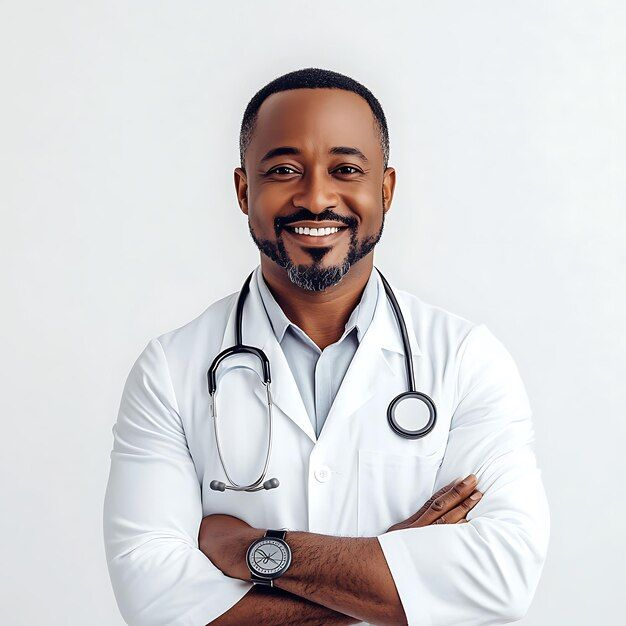

Nos Medecins

Dr. Yaya Dabo
Docteur général
🔹 Accueil et écoute du patient
🔹 Diagnostic
🔹 Traitement et soins
🔹 Prévention et suivi
🔹 Orientation
🔹 Relation de confiance
Dr. Yacine Teuw Fall
Spécialiste en médecine générale avec 10 ans d'expérience.
🔹 Accueil et suivi global des patients
🔹 Expertise diagnostique renforcée
🔹 Traitement et prise en charge avancée
🔹 Prévention et éducation à la santé
🔹 Coordination et travail en réseau
🔹 Encadrement et transmission
🔹 Humanité et expérience
Dr. Fatima Ndiaye
Cardiologue renommé, expert en soins cardiaques avancés.
🔹 Diagnostic spécialisé
🔹 Prise en charge thérapeutique avancée
🔹 Prévention et suivi personnalisé
🔹 Expertise de haut niveau
🔹 Coordination multidisciplinaire
🔹 Réputation et humanisme
Dr. Abdoulaye Mar
Pédiatre dévouée, passionnée par la santé des enfants.
🔹 Soins complets pour enfants
🔹 Suivi de croissance et développement
🔹 Prévention et éducation parentale
🔹 Gestion des maladies infantiles
🔹 Approche bienveillante et rassurante
🔹 Collaboration avec les familles

Dr. Bakary Diarra
Dermatologue spécialisé dans les traitements de la peau.
🔹 Diagnostic précis des affections cutanées
🔹 Traitements dermatologiques avancés
🔹 Soins esthétiques et cosmétiques
🔹 Prévention et éducation à la santé de la peau
🔹 Approche personnalisée et attentive
🔹 Expertise reconnue en dermatologie